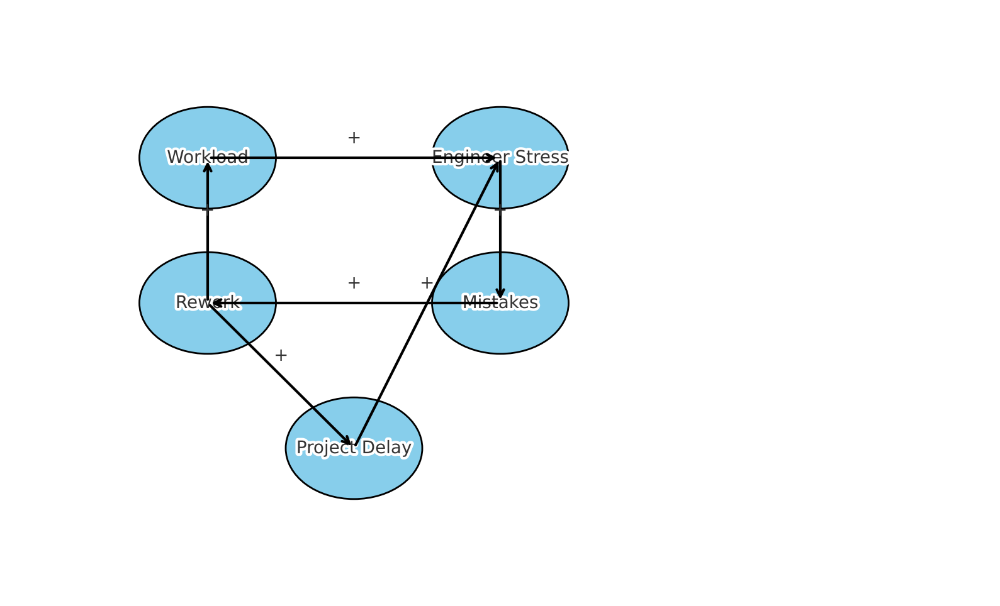

Causal Loop Diagram
This diagram illustrates how increasing workload on engineering teams can trigger stress, errors, rework, and further delays—creating a reinforcing feedback loop.
Systems Thinking Reflection
In engineering leadership, understanding system dynamics is critical to avoiding unintended consequences. This causal loop diagram reflects how stress and rework can amplify project delays in a reinforcing feedback loop. As a leader, I must address root causes like workload distribution and team communication to break the cycle. Systems thinking encourages me to zoom out and recognize patterns over time, not just isolated issues.
Systems-Based Engineering Decision
In a recent civil engineering project, rework due to design errors caused timeline slippage and increased team burnout. By identifying this feedback loop early, we revised the review process and introduced an early stress check-in for staff. This decision helped reduce the rework load and prevented future delays. Thinking in systems enabled us to anticipate secondary effects and improve overall project flow.